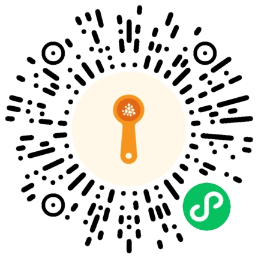

《Claude》· 一行
Claude 是一个字接一个字写出来的，所以全片只有一条橙色的线：开头是对话框里的光标，后来是歌词的底线，最后汇成一个星号。唱到哪个字，笔尖就按真实笔顺写出哪个字。
- 我
- 歌词直接做成画面，不加字幕条；横屏；结尾的星号重新设计，不用官方标志
- Agent
- Claude Code 写渲染器、逐字歌词对齐、笔顺动画和一笔签名
Iris · AI 应用 / AGENT 工程
宠物行业一线出身，现在带多个 coding agent 做项目。我定边界，agent 施工，最后由我验收。
选题和需求调研，定权限边界和验收标准。
多个 AI 编程工具接进同一套会话、记忆和任务总线，在「会议室」里按席位分工。
种模型后端适配
个会议室席位，各自绑定 agent 和模型
私聊缓存命中率（单次实测）
2026
出处：公开仓 ARCHITECTURE / CHANGELOG 与任务账本。补丁体积为单次实测。
给多个 AI 共用的长期记忆。Markdown 是真源，MCP 暴露读写工具，Git 多端同步。
个 MCP 工具
个客户端共用：Claude Code、Codex、Grok CLI、OpenCode、AI Hub
改用预载后：13,764 → 6,138 字符
2026
出处：私仓 git log、测试目录与 MCP 源码；模板仓 tag 与 CI 配置。截至 2026-09-27。
把模糊的量翻成数字：一杯奶茶多少大卡，菜谱里的「少许」「中火」到底是多少。
个官方档位组合（霸王茶姬 120 款），逐项核对
个菜谱模糊词，每个有数值、参照、补救
估算误差中位数（留一法，n = 2,121）
锅烧热倒油，下葱姜蒜，放青菜转翻炒至，出锅前加盐。
点奶茶的杯型和甜度，或者切到「少许是多少」点菜谱里的词，再把灶具换成电磁炉。数据取自小程序的规则库和霸王茶姬官方公示，这里是网页复刻。

小程序已上线。电脑上用微信扫码；手机在微信里打开本页，长按小程序码识别。
模糊词查本地规则库，热量只认官方公示，结果可以复现。拍点单识别用微信 OCR 拿文字，再按规则对上官方档位；同一项识别出多个档位时，提示「没看清」，不去猜。
最早选题是给宠物寄养店员用的「寄养手记」，从日常工作的真实痛点出发，调研后放弃了：门店都有自己的流程和小程序，第三方工具接不进去。换成了我和朋友就是用户的题目：看不懂菜谱里的模糊词。内测时有人想记奶茶热量，于是合并成奶茶为主、菜谱为辅。
2026
出处：pet-daily 仓 terms.js、冒烟脚本、PRD 与识别验收回执。
把理光 GR IV HDF 机内的「负片」风格，反推成 Lightroom 里能看、能改、能复现的配方。
色差 ΔE00 中位数，从相机标准配置到全局 LUT
同一次曝光的 RAW + 机内 JPEG，约 60 个场景
同一组参数两次渲染的色差（196,608 像素）
一张 17³ 的全局 LUT，所有照片共用。最差的一张也只到 1.00。
2026
出处：reports/phase0d-audit.md、audit-summary.json、round-trip 报告。
两首歌是我用 Suno 生成的。画面由 Claude Code 写代码逐帧渲染，《Astra》里的实拍质感画面由 Grok Imagine 生成。我定方向、划边界、看片验收，和做项目是同一套分工。
Claude 是一个字接一个字写出来的，所以全片只有一条橙色的线：开头是对话框里的光标，后来是歌词的底线，最后汇成一个星号。唱到哪个字，笔尖就按真实笔顺写出哪个字。
Astra 读过人写下的一切，却没亲眼见过世界。她的部分画在纸上：墨、铅笔、按真实星表画的星图；真实世界是生成的实拍质感画面。两者之间每次过渡都像暗房显影，全片没有硬切。
素材与授权：《Astra》的实拍质感画面由 Grok Imagine 生成；星表 HYG Database v4.1（CC BY-SA 4.0）；海岸线 Natural Earth（公共领域）；笔顺数据 Make Me a Hanzi（Arphic Public License）；字体均为 SIL OFL / Apache 授权的开源字体；画面里引用的古典文本均已进入公版。
数字媒体技术专业。在宠物行业一线做了约两年：寄养、洗护、喂养、客户沟通。习惯先找流程里会出事的地方，再用记录和提醒堵上。做 agent 系统关心的也是这些：谁能动什么，出错了怎么发现，怎么回滚。
AI 应用 / Agent 工程。长期想做 Agent 应用：流程自动化、智能客服、知识库。
CAIE 一级、二级；MIIT AI 工程师。
Claude Code、Codex、Grok CLI、OpenCode、Kimi；TypeScript、Python、微信小程序、MCP、Linux、Git。